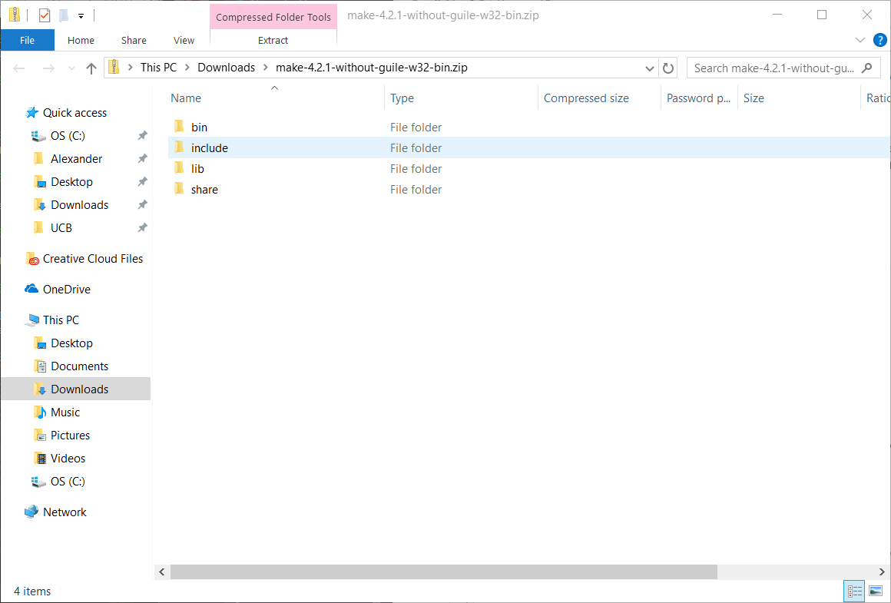
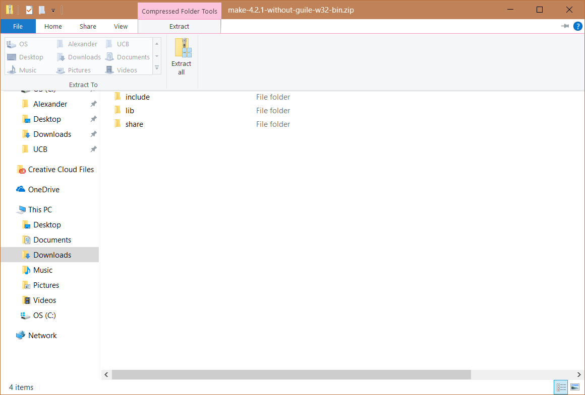
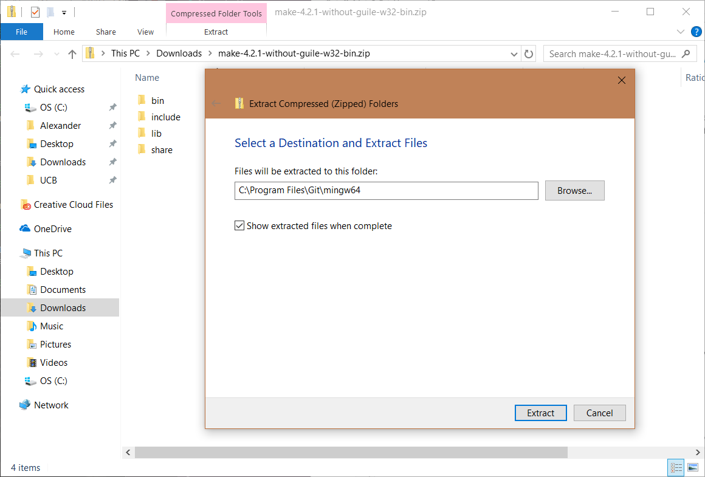

As you might have noticed, the starter code for Gitlet and Capers includes these curious files named “Makefile”, which are used by a utility called Make. Make is a very handy tool for compiling and testing large projects such as the ones you will eventually be writing in this course, and can be used on the command line (terminal), however may need to be installed first.
Mac Installation
For MacOS users, first make sure to first have Xcode installed (from the App store), then in the terminal enter the command
xcode-select --install
Linux/Ubuntu Installation
For Linux/Ubuntu, if you do not have it try
sudo apt-get install build-essential
Windows Installation
For Windows, you can download and install Make from here (only the Make instructions are relevant).
From there, instructions on the various ways you can use the Makefiles are documented within them.
Below are additionally some screenshots of various steps of Windows installation, which you may find useful:
Opening your zip file

Clicking extract all

Extracting to Git/mingw64
